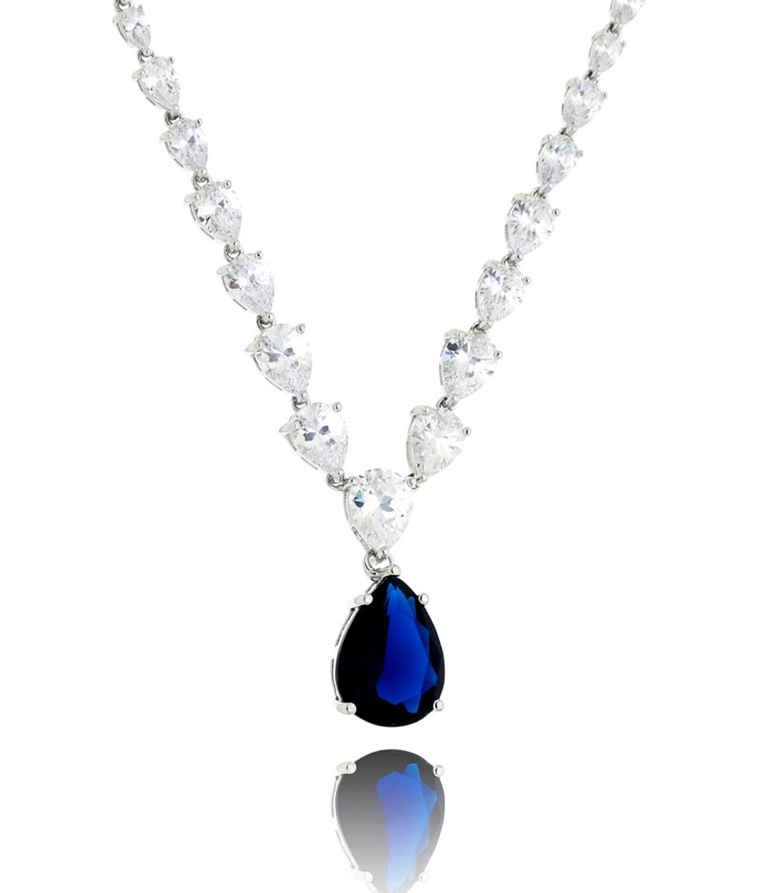

Joalheria

Elegante e sofisticado, este colar é a expressão máxima do luxo atemporal. Confeccionado com uma sequência de pedras lapidadas em formato de gota, que simulam diamantes com brilho intenso, a peça culmina em um deslumbrante pingente central — uma pedra azul profunda, em corte gota, que evoca a intensidade e o mistério dos safiras reais.
A harmonia entre as pedras claras e a gema central azul cria um contraste refinado e marcante, ideal para ocasiões especiais. Com acabamento em metal prateado de alto brilho e design clássico, este colar é perfeito para mulheres que desejam se destacar com elegância e sofisticação.